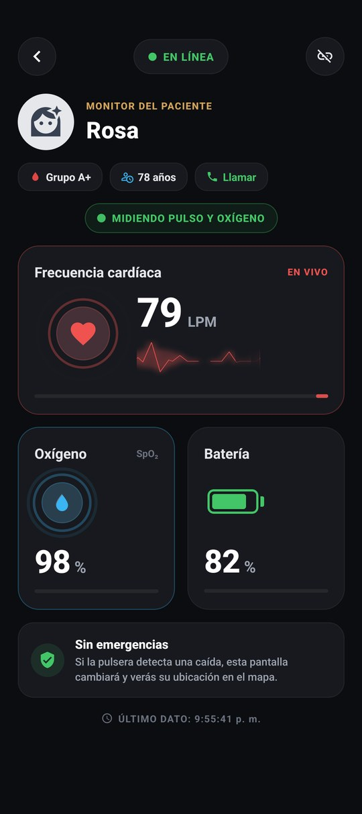
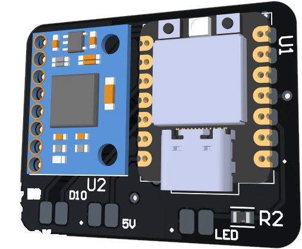
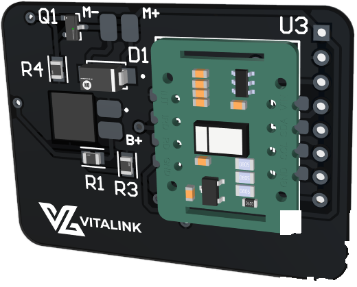

📍 Ubicación enviada · ahora
ProyectoVitaLink
Pulsera inteligente que detecta caídas y avisa a la familia, pensada para adultos mayores
Franco Castillo · Valentín Cerri · Francisco Salatín · Santiago VirgoliniInstituto Técnico Salesiano Villada · Córdoba, Argentina
La problemática
- 0adultos mayores de 65 años viven solos en ArgentinaCenso INDEC
- 0declara sentir una soledad profundaCruz Roja Argentina
- Vivir solo da autonomía, pero deja al adulto muy vulnerable ante una emergencia
¿Qué impulsó el proyecto?
Nuestro compañero Franco Castillo propuso la idea de VitaLink pensando en su abuela.
Ella vive sola desde hace 20 años.
Vive con el temor de que le pase algo y de que su familia se entere recién cuando ya es tarde.
Un imprevisto apuró todo: su abuela sufrió una caída cuando VitaLink ya estaba en marcha.
Caídas
Las caídas son mucho más frecuentes después de los 65 años
Pasados los 75 años, son la sexta causa de muerte
de las fracturas en adultos mayores viene de una caída previa
Factores de riesgo
Tiempo en el piso
- Horas sin ayuda → deshidratación, infecciones y úlceras
- Un golpe que se podía curar puede volverse mortal
- Síndrome poscaída: entre el 9% y el 26% deja de hacer sus actividades por miedo
Las alternativas
Geriátrico
Cobertura las 24 h, pero pérdida total de independencia
$1.600.000 a $2.600.000 por mesSmartwatch
Pantallas y menús confusos, hay que cargarlo todos los días
$70.000 a $100.000Cuidador domiciliario
Rara vez cubre las 24 h: la noche queda descubierta
$1.000.000 a $1.500.000 por mesBotón de pánico
Atado al teléfono fijo: pierde señal fuera de casa
¿Qué es VitaLink?
VitaLink es un dispositivo de asistencia pensado para cuidar a las personas mayores sin quitarles su independencia.
Es una pulsera sencilla que detecta caídas, monitorea el pulso y el oxígeno y avisa al instante a los familiares, con la ubicación exacta de la persona.
Así es la pulsera
- Sin pantallas ni menúsNo hay nada que configurar
- Tres toques piden ayudaY uno en Cancelar corta una falsa alarma
- Vibra para confirmarLa persona sabe que el aviso salió
- Mide pulso y oxígenoCon el sensor de la cara interna
Por dentro


E armar / desarmar · arrastrá para girar
¿Cómo detecta una caída?
¿Qué pasa durante una caída?
- Detecta la caída mientras monitorea pulso y oxígeno
- Envía una alerta al familiar a través de la aplicación
- Comparte la ubicación de la pulsera en tiempo real
- Si no se detecta sola, está el botón S.O.S.Y si fue una falsa alarma, se cancela fácilmente
Una app, dos modos
Una diferencia clave
Cargador magnético
Se apoya sobre la pulsera y sus pogo pins tocan los pads de carga
No pierde funciones
Replica las zonas táctiles de S.O.S. y Cancelar en su cara externa
El adulto no tiene que sacarse la pulsera para cargarla → nunca queda desprotegido
Ventajas y limitaciones
VENTAJAS
LIMITACIONES
Planes a futuro
Placa más chica
Miniaturizar el circuito impreso
Diseño ergonómico
Una pulsera más cómoda y fácil de llevar
Recordatorio de medicación
Avisos para tomar cada dosis a horario
¡Gracias!
Cuidado inteligente para quienes más querés